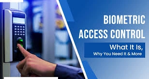
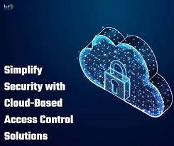
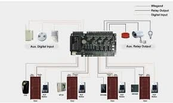
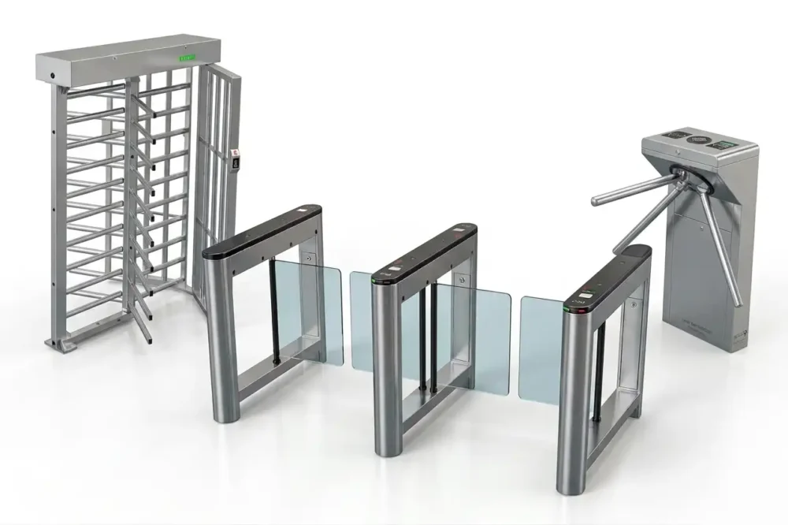
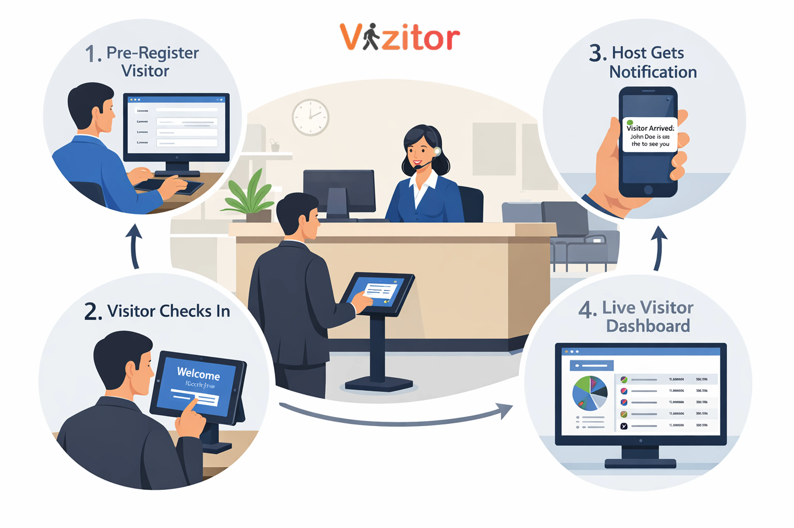
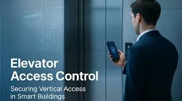
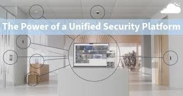

At Internetworking Solutions Ltd, we provide industry-leading access control systems in Nairobi, Mombasa, Kisumu, and across Kenya. Secure your premises with modern biometric fingerprint systems, RFID card access, and smart door entry solutions designed for offices, apartments, schools, and commercial buildings.
Our access control solutions help you restrict unauthorized access, monitor employee attendance, and enhance security management with real-time reporting and remote access capabilities.
📲 Get a Free Access Control System QuoteExplore modern access control technologies designed to secure your business and property.

Enhance your security with advanced biometric fingerprint authentication systems designed for high accuracy.
Ideal for offices, banks, data centers, and restricted environments.
Eliminates risks associated with lost or stolen access cards.
Provides detailed access logs and user tracking capabilities.
Supports integration with time attendance systems.
Fast and reliable recognition even with high user volumes.
Weather-resistant models available for outdoor installations.
Offers multi-user enrollment with centralized management.
Reduces unauthorized access and internal security threats.
Seamlessly integrates with existing security infrastructure.
Supports multi-factor authentication for enhanced protection.
Scalable for small businesses to large enterprises.
Ensures compliance with modern security standards.
Provides long-term cost savings by eliminating card replacements.
Reliable and user-friendly RFID access systems for secure entry management.
Perfect for offices, apartments, schools, and commercial buildings.
Uses cards, key fobs, or tags for quick and seamless access.
Easy to issue, revoke, and manage user credentials.
Supports integration with door locks, gates, and turnstiles.
Offers real-time monitoring and reporting features.
Cost-effective solution for growing organizations.
Can be integrated with visitor management systems.
Supports multiple access levels for different user groups.
Enhances operational efficiency and security control.
Durable and long-lasting hardware components.
Centralized control via software dashboards.
Flexible configurations for different security needs.
Ideal for both indoor and outdoor environments.
Cutting-edge facial recognition systems powered by AI technology.
Provides contactless access control for hygiene and convenience.
Ideal for high-security and high-traffic environments.
Fast identification even in low-light conditions.
Reduces dependency on physical access credentials.
Supports mask detection and temperature screening options.
Integrates with CCTV and surveillance systems.
High accuracy with minimal false acceptance rates.
Supports large user databases with quick retrieval.
Remote access and monitoring capabilities available.
Enhances security without compromising user experience.
Customizable alerts and notifications for events.
Designed for modern smart buildings and offices.
Future-proof solution for evolving security needs.
Efficient employee attendance tracking with automated systems.
Eliminates manual record-keeping and reduces human errors.
Supports biometric, RFID, and facial recognition inputs.
Generates accurate reports for payroll processing.
Tracks working hours, overtime, and shift patterns.
Cloud-based and on-premise deployment options available.
Easy integration with HR and payroll software.
Improves workforce productivity and accountability.
Real-time attendance monitoring and alerts.
Customizable reports for management insights.
Secure data storage and backup options.
Scalable for organizations of all sizes.
User-friendly interface for administrators.
Enhances operational efficiency and transparency.
Modern mobile-based access systems using smartphones as credentials.
Allows users to unlock doors via apps, NFC, or Bluetooth.
Eliminates the need for physical cards or keys.
Ideal for smart offices, hotels, and residential buildings.
Remote access management from anywhere in the world.
Real-time access control and user permissions.
Seamless integration with smart building systems.
Highly secure encrypted communication protocols.
Supports temporary and guest access permissions.
Enhances user convenience and flexibility.
Reduces operational costs related to card management.
Scalable for future expansion and upgrades.
Compatible with both Android and iOS devices.
Perfect for modern digital workplaces.
Secure visitor management with advanced intercom systems.
Enables audio and video communication before granting access.
Ideal for apartments, offices, and gated properties.
Enhances security by verifying visitor identity.
Supports remote door unlocking functionality.
High-definition video and clear audio quality.
Integration with mobile apps and monitoring systems.
Allows recording and playback of visitor interactions.
Multi-unit support for residential complexes.
Weatherproof devices for outdoor installations.
Improves safety and communication efficiency.
User-friendly interface for easy operation.
Customizable configurations for different needs.
Reliable solution for modern access control.
We implement advanced, scalable, and integrated access control technologies tailored for enterprise environments.

Centralized cloud-managed access control for multi-site enterprises.
Manage doors, users, and permissions from anywhere securely.
Eliminates the need for on-site servers and complex infrastructure.
Real-time updates and monitoring across all locations.
Highly scalable for growing businesses and distributed teams.
Automatic software updates and security patches.
Secure data encryption and cloud backups.
Supports remote diagnostics and troubleshooting.
Seamless integration with mobile and web applications.
Reduces maintenance and operational costs.
Ensures business continuity with cloud redundancy.
Ideal for modern smart enterprise environments.

Advanced controllers designed to manage multiple access points.
Ideal for office complexes, campuses, and large facilities.
Centralized management of all entry and exit points.
High-speed processing for seamless user authentication.
Supports integration with biometric and RFID systems.
Real-time monitoring and instant alerts for security breaches.
Expandable architecture for future growth.
Ensures consistent access control policies across locations.
Reliable performance in high-traffic environments.
Reduces system complexity with unified control panels.
Provides detailed access logs and analytics.
Enhances overall security infrastructure efficiency.

Physical access control solutions for managing pedestrian and vehicle flow.
Ideal for corporate offices, stadiums, and industrial facilities.
Prevents unauthorized entry and tailgating.
Supports integration with cards, biometrics, and QR systems.
Automated entry and exit tracking with high accuracy.
Durable construction for heavy-duty usage environments.
Enhances security at entry points and restricted zones.
Customizable configurations for different access needs.
Supports emergency override and safety features.
Seamless integration with surveillance systems.
Improves operational efficiency and crowd management.
Professional installation and system calibration provided.

Streamlined visitor registration and access control solutions.
Enhances front desk operations with digital check-in systems.
Captures visitor data, photos, and identification securely.
Pre-registration options for scheduled visits.
Prints visitor badges with access permissions.
Real-time notifications to hosts upon visitor arrival.
Maintains detailed visitor logs for auditing purposes.
Improves security and visitor experience.
Integrates with access control and surveillance systems.
Customizable workflows for enterprise environments.
Supports compliance with security policies.
Reduces manual paperwork and administrative tasks.

Control access to specific floors using secure authentication.
Ideal for corporate offices, hotels, and high-rise buildings.
Prevents unauthorized movement within the building.
Integrates with RFID, biometrics, and mobile credentials.
Customizable floor access permissions for different users.
Enhances privacy and security in multi-tenant buildings.
Seamless integration with building management systems.
Real-time monitoring and reporting capabilities.
Supports time-based access restrictions.
Improves operational control and efficiency.
Scalable for large building infrastructures.
Ensures safe and secure vertical mobility management.

Unified platforms combining access control, CCTV, and alarms.
Provides centralized monitoring and management dashboards.
Enhances situational awareness and incident response.
Seamless integration across multiple security technologies.
Real-time alerts and automated response triggers.
Advanced analytics and reporting tools.
Improves coordination between security systems.
Supports remote access and control capabilities.
Customizable to meet enterprise security requirements.
Reduces operational complexity and costs.
Future-ready architecture for smart buildings.
Ensures comprehensive and layered security protection.
Control employee access, secure sensitive departments, and track attendance efficiently.
Enhance tenant security with controlled entry and visitor management systems.
Protect students and staff with secure entry points and access monitoring.
Restrict access to critical zones and ensure operational security.
Secure restricted medical areas, protect patient data, and manage staff access efficiently.
Enhance guest experience with secure room access, staff control, and seamless entry systems.
Upgrade your security with a reliable access control system in Kenya. Protect your business, employees, and assets with cutting-edge technology.
Contact Us for InstallationExplore our full range of ICT and infrastructure solutions: